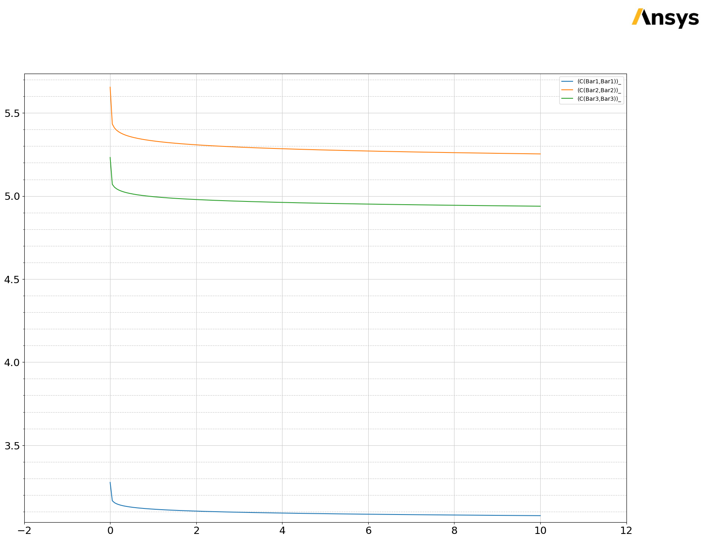
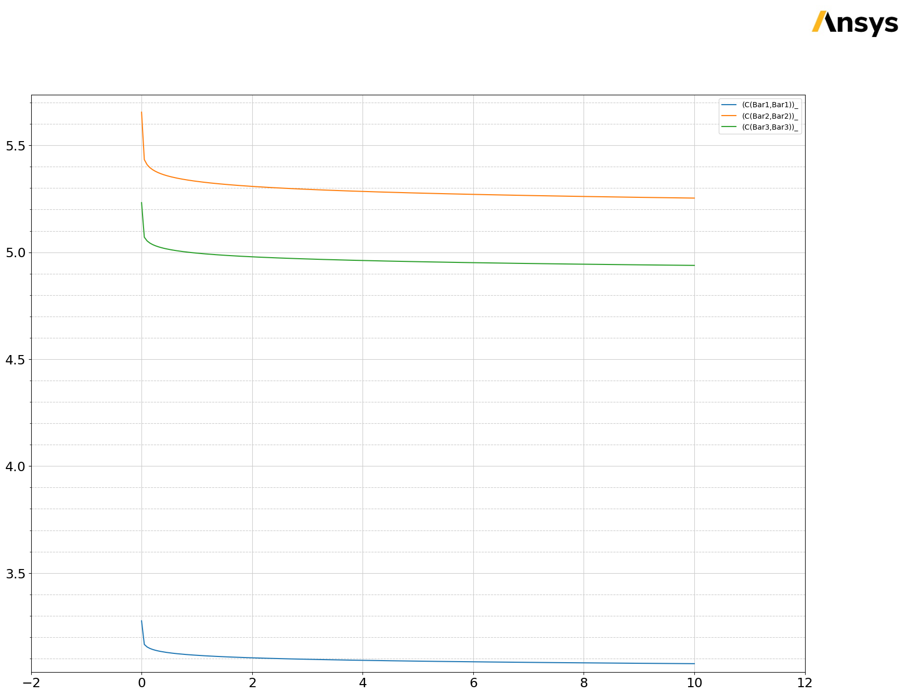

Download this example
Download this example as a Jupyter Notebook or as a Python script.
Busbar analysis#
This example shows how to use PyAEDT to create a busbar design in Q3D Extractor and run a simulation.
Keywords: Q3D, **EMC*, busbar.
Perform imports and define constants#
Perform required imports.
[1]:
import os
import tempfile
import time
import ansys.aedt.core
Define constants.
[2]:
AEDT_VERSION = "2025.2"
NUM_CORES = 4
NG_MODE = False
Create temporary directory#
Create a temporary directory where downloaded data or dumped data can be stored. If you’d like to retrieve the project data for subsequent use, the temporary folder name is given by temp_folder.name.
[3]:
temp_folder = tempfile.TemporaryDirectory(suffix=".ansys")
Launch AEDT and Q3D Extractor#
Launch AEDT 2024 R2 in graphical mode and launch Q3D Extractor. This example uses SI units.
[4]:
q3d = ansys.aedt.core.Q3d(
project=os.path.join(temp_folder.name, "busbar.aedt"),
version=AEDT_VERSION,
non_graphical=NG_MODE,
new_desktop=True,
)
PyAEDT INFO: Python version 3.10.11 (tags/v3.10.11:7d4cc5a, Apr 5 2023, 00:38:17) [MSC v.1929 64 bit (AMD64)].
PyAEDT INFO: PyAEDT version 0.19.dev0.
PyAEDT INFO: Initializing new Desktop session.
PyAEDT INFO: Log on console is enabled.
PyAEDT INFO: Log on file C:\Users\ansys\AppData\Local\Temp\pyaedt_ansys_0ea22b7d-c317-4c44-9c46-35d66c0a676b.log is enabled.
PyAEDT INFO: Log on AEDT is disabled.
PyAEDT INFO: Debug logger is disabled. PyAEDT methods will not be logged.
PyAEDT INFO: Launching PyAEDT with gRPC plugin.
PyAEDT INFO: New AEDT session is starting on gRPC port 50791.
PyAEDT INFO: Electronics Desktop started on gRPC port: 50791 after 10.786335229873657 seconds.
PyAEDT INFO: AEDT installation Path C:\Program Files\ANSYS Inc\v252\AnsysEM
PyAEDT INFO: Ansoft.ElectronicsDesktop.2025.2 version started with process ID 13296.
PyAEDT INFO: Project busbar has been created.
PyAEDT INFO: No design is present. Inserting a new design.
PyAEDT INFO: Added design 'Q3D Extractor_6NJ' of type Q3D Extractor.
PyAEDT INFO: Aedt Objects correctly read
Create and set up the Q3D model#
Create polylines for three busbars and a box for the substrate.
[5]:
b1 = q3d.modeler.create_polyline(
points=[[0, 0, 0], [-100, 0, 0]],
name="Bar1",
material="copper",
xsection_type="Rectangle",
xsection_width="5mm",
xsection_height="1mm",
)
q3d.modeler["Bar1"].color = (255, 0, 0)
q3d.modeler.create_polyline(
points=[[0, -15, 0], [-150, -15, 0]],
name="Bar2",
material="aluminum",
xsection_type="Rectangle",
xsection_width="5mm",
xsection_height="1mm",
)
q3d.modeler["Bar2"].color = (0, 255, 0)
q3d.modeler.create_polyline(
points=[[0, -30, 0], [-175, -30, 0], [-175, -10, 0]],
name="Bar3",
material="copper",
xsection_type="Rectangle",
xsection_width="5mm",
xsection_height="1mm",
)
q3d.modeler["Bar3"].color = (0, 0, 255)
q3d.modeler.create_box(
origin=[50, 30, -0.5],
sizes=[-250, -100, -3],
name="substrate",
material="FR4_epoxy",
)
q3d.modeler["substrate"].color = (128, 128, 128)
q3d.modeler["substrate"].transparency = 0.8
q3d.plot(
show=False,
output_file=os.path.join(temp_folder.name, "Q3D.jpg"),
plot_air_objects=False,
)
PyAEDT INFO: Modeler class has been initialized! Elapsed time: 0m 0sec
PyAEDT INFO: Materials class has been initialized! Elapsed time: 0m 0sec
PyAEDT INFO: Parsing C:\Users\ansys\AppData\Local\Temp\tmpa0s05tyx.ansys\busbar.aedt.
PyAEDT INFO: File C:\Users\ansys\AppData\Local\Temp\tmpa0s05tyx.ansys\busbar.aedt correctly loaded. Elapsed time: 0m 0sec
PyAEDT INFO: aedt file load time 0.013625621795654297
PyAEDT INFO: PostProcessor class has been initialized! Elapsed time: 0m 0sec
PyAEDT INFO: Post class has been initialized! Elapsed time: 0m 0sec
[5]:
<ansys.aedt.core.visualization.plot.pyvista.ModelPlotter at 0x18170e21450>
Identify nets and assign sources and sinks to all nets. There is a source and sink for each busbar.
[6]:
q3d.auto_identify_nets()
q3d.source(assignment="Bar1", direction=q3d.AxisDir.XPos, name="Source1")
q3d.sink(assignment="Bar1", direction=q3d.AxisDir.XNeg, name="Sink1")
q3d.source(assignment="Bar2", direction=q3d.AxisDir.XPos, name="Source2")
q3d.sink(assignment="Bar2", direction=q3d.AxisDir.XNeg, name="Sink2")
q3d.source(assignment="Bar3", direction=q3d.AxisDir.XPos, name="Source3")
bar3_sink = q3d.sink(assignment="Bar3", direction=q3d.AxisDir.YPos, name="Sink3")
PyAEDT INFO: 3 Nets have been identified: Bar1, Bar2, Bar3
PyAEDT INFO: Boundary Source Source1 has been created.
PyAEDT INFO: Boundary Sink Sink1 has been created.
PyAEDT INFO: Boundary Source Source2 has been created.
PyAEDT INFO: Boundary Sink Sink2 has been created.
PyAEDT INFO: Boundary Source Source3 has been created.
PyAEDT INFO: Boundary Sink Sink3 has been created.
Print information about nets and terminal assignments.
[7]:
print(q3d.nets)
print(q3d.net_sinks("Bar1"))
print(q3d.net_sinks("Bar2"))
print(q3d.net_sinks("Bar3"))
print(q3d.net_sources("Bar1"))
print(q3d.net_sources("Bar2"))
print(q3d.net_sources("Bar3"))
['Bar1', 'Bar2', 'Bar3']
['Sink1']
['Sink2']
['Sink3']
['Source1']
['Source2']
['Source3']
Create Matrix Reduction Operations#
Series of Bar1 and Bar2
[8]:
mr_series = q3d.insert_reduced_matrix(
operation_name="JoinSeries",
assignment=["Sink1", "Source2"],
reduced_matrix="MR_1_Series",
new_net_name="Series1",
)
Add Parallel with Bar3
[9]:
mr_series.add_operation(
operation_type="JoinParallel",
source_names=["Source1", "Source3"],
new_net_name="SeriesPar",
new_source_name="src_par",
new_sink_name="snk_par",
)
[9]:
True
Series of Bar1 and Bar2
[10]:
mr_series2 = q3d.insert_reduced_matrix(
operation_name="JoinSeries",
assignment=["Sink1", "Source2"],
reduced_matrix="MR_2_Series",
new_net_name="Series2",
)
Add Series with Bar3
[11]:
mr_series2.add_operation(
operation_type="JoinSeries",
source_names=["Sink3", "Source1"],
new_net_name="MR_2_Series1",
)
[11]:
True
Add a solution Setup and an interpolating frequency sweep#
[12]:
freq_sweep_name = "my_sweep"
setup1 = q3d.create_setup(props={"AdaptiveFreq": "1000MHz"})
sweep = setup1.create_linear_step_sweep(
freqstart=0,
freqstop=10,
step_size=0.05,
sweepname=freq_sweep_name,
sweep_type="Interpolating",
)
PyAEDT WARNING: Argument `freqstart` is deprecated for method `create_linear_step_sweep`; use `start_frequency` instead.
PyAEDT WARNING: Argument `freqstop` is deprecated for method `create_linear_step_sweep`; use `stop_frequency` instead.
PyAEDT WARNING: Argument `sweepname` is deprecated for method `create_linear_step_sweep`; use `name` instead.
PyAEDT INFO: Linear step sweep my_sweep has been correctly created
Analyze#
Solve the setup.
[13]:
q3d.analyze(cores=NUM_CORES)
q3d.save_project()
PyAEDT INFO: Project busbar Saved correctly
PyAEDT INFO: Key Desktop/ActiveDSOConfigurations/Q3D Extractor correctly changed.
PyAEDT INFO: Solving all design setups.
PyAEDT INFO: Key Desktop/ActiveDSOConfigurations/Q3D Extractor correctly changed.
PyAEDT INFO: Design setup None solved correctly in 0.0h 1.0m 8.0s
PyAEDT INFO: Project busbar Saved correctly
[13]:
True
Specify the traces to display and create the Reports.#
Capacitances - Original Matrix.
[14]:
original_matrix_self = q3d.matrices[0].get_sources_for_plot(
get_self_terms=True, get_mutual_terms=False
)
original_matrix_mutual = q3d.matrices[0].get_sources_for_plot(
get_self_terms=False, get_mutual_terms=True
)
ACL - Reduced Matrix MR_1_Series
[15]:
reduced_matrix_1_self = mr_series.get_sources_for_plot(
get_self_terms=True, get_mutual_terms=False, category="ACL"
)
ACL - Reduced Matrix MR_2_Series
[16]:
reduced_matrix_2_self = mr_series2.get_sources_for_plot(
get_self_terms=True, get_mutual_terms=False, category="ACL"
)
Define plots and a data table in AEDT for visualizing results.
[17]:
original_matrix_self_report = q3d.post.create_report(
expressions=original_matrix_self, plot_name="Original, Self Capacitances"
)
original_matrix_mutual_report = q3d.post.create_report(
expressions=original_matrix_mutual,
context="Original",
plot_type="Data Table",
plot_name="Original, Mutual Capacitances",
)
reduced_matrix_1_self_report = q3d.post.create_report(
expressions=reduced_matrix_1_self,
context="MR_1_Series",
plot_name="MR_1_Series, Self Inductances",
)
reduced_matrix_2_self_report = q3d.post.create_report(
expressions=reduced_matrix_2_self,
context="MR_2_Series",
plot_name="MR_2_Series, Self Inductances",
)
reduced_matrix_2_self_report.edit_x_axis_scaling(linear_scaling=False)
[17]:
True
Retrieve solution data for processing in Python.
[18]:
data = q3d.post.get_solution_data(expressions=original_matrix_self, context="Original")
data.plot()
PyAEDT INFO: Solution Data Correctly Loaded.
[18]:


Release AEDT#
[19]:
q3d.save_project()
q3d.release_desktop()
# Wait 3 seconds to allow AEDT to shut down before cleaning the temporary directory.
time.sleep(3)
PyAEDT INFO: Project busbar Saved correctly
PyAEDT INFO: Desktop has been released and closed.
Clean up#
All project files are saved in the folder temp_folder.name. If you’ve run this example as a Jupyter notebook, you can retrieve those project files. The following cell removes all temporary files, including the project folder.
[20]:
temp_folder.cleanup()
Download this example
Download this example as a Jupyter Notebook or as a Python script.